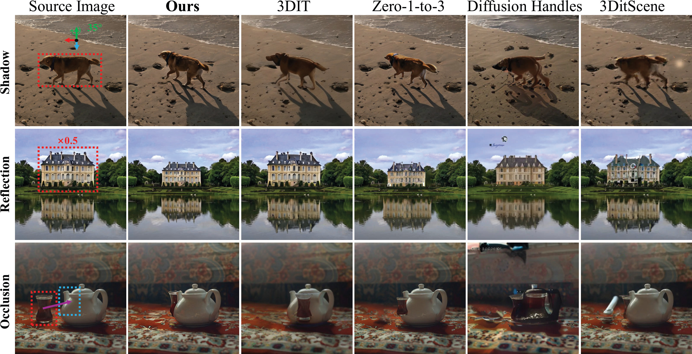
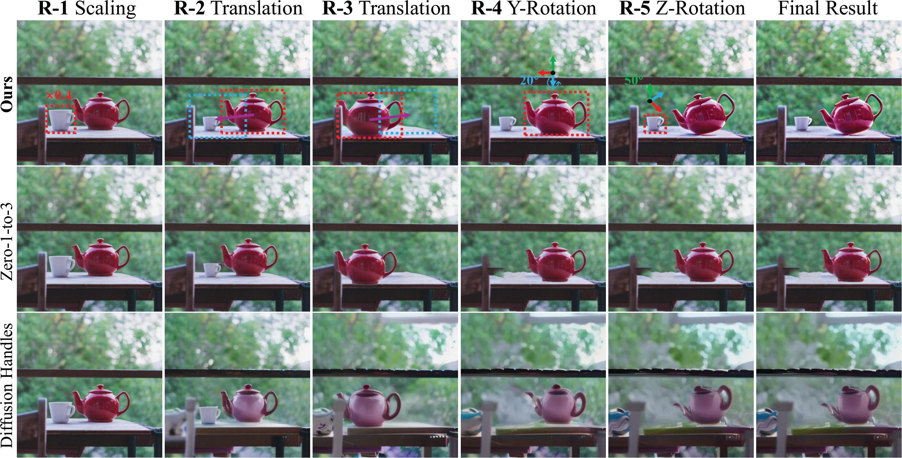

Abstract
Recent advances in text-to-image (T2I) diffusion models have significantly improved semantic image editing, yet most methods fall short in performing 3D-aware object manipulation. In this work, we present FFSE, a 3D-aware autoregressive framework designed to enable intuitive, physically-consistent object editing directly on real-world images. Unlike previous approaches that either operate in image space or require slow and error-prone 3D reconstruction, FFSE models editing as a sequence of learned 3D transformations, allowing users to perform arbitrary manipulations, such as translation, scaling, and rotation, while preserving realistic background effects (e.g. shadows, reflections) and maintaining global scene consistency across multiple editing rounds. To support learning of multi-round 3D-aware object manipulation, we introduce 3DObjectEditor, a hybrid dataset constructed from simulated editing sequences across diverse objects and scenes, enabling effective training under multi-round and dynamic conditions. Extensive experiments show that the proposed FFSE significantly outperforms existing methods in both single-round and multi-round 3D-aware editing scenarios.
3D-Aware Object Manipulation

(a) Single-Round Editing
Examples of single-round 3D object manipulation including translation, rotation, and scaling.

(b) Realistic Environment Interaction
Edited objects maintain realistic shadows, reflections, and other environmental effects.

(c) Multi-Round Editing
Sequential manipulation across multiple editing rounds while preserving global scene consistency.
Methodology
Model Architecture: FFSE adopts an autoregressive framework that models object manipulation as a sequence of learned 3D transformations. The architecture consists of three key components: (1) a 3D-aware encoder that extracts object and scene representations while preserving spatial relationships, (2) a transformation predictor that learns to map user instructions to precise 3D operations (translation, rotation, scaling), and (3) a context-aware decoder that synthesizes the edited image while maintaining realistic environmental interactions such as shadows and reflections.
Training Strategy: To enable effective multi-round editing capabilities, we introduce a two-stage training approach. In the first stage, the model is trained on single-round edits from our 3DObjectEditor dataset, learning fundamental 3D manipulation primitives. The second stage employs curriculum learning with progressively longer editing sequences, teaching the model to maintain global consistency across multiple rounds. We incorporate a hybrid loss function combining reconstruction quality, environmental effect preservation, and geometric consistency constraints to ensure physically plausible results.
Experiments
We evaluate FFSE across three key dimensions of 3D-aware image editing. Our experiments support six fundamental 3D operations: translation along X/Y/Z axes, rotation around pitch/yaw/roll axes, and scaling. The evaluation focuses on preserving object identity, maintaining geometric consistency, and generating realistic environmental effects throughout the editing process.
Single-Round Editing: Comparison with state-of-the-art methods on basic 3D transformations including translation, rotation , and scaling. We evaluate performance on diverse object categories and scene types.
Realistic Environment Interaction: Assessment of environmental effect generation and preservation, including cast shadows on different surfaces, specular and diffuse reflections, light-object interactions, and spatial occlusion relationships. We test across varying lighting conditions and surface materials.
Multi-Round Editing: Evaluation on sequential editing scenarios. We examine the model's ability to accumulate transformations accurately, maintain scene coherence across rounds, and preserve both object details and environmental effects throughout extended editing sessions.
BibTeX
@inproceedings{FFSE,
title={Free-Form Scene Editor: Enabling Multi-Round Object Manipulation Like in a 3D Engine},
author={Shuai Xincheng and Qin, Zhenyuan and Ding, Henghui and Tao, Dacheng},
booktitle={AAAI},
year={2026}
}